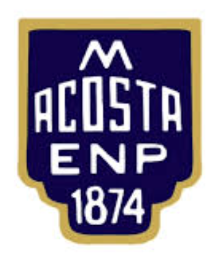
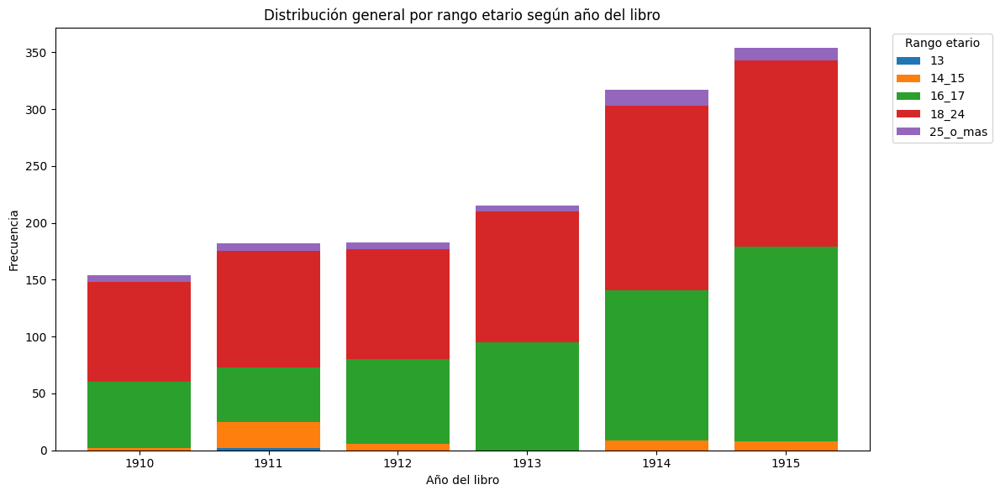
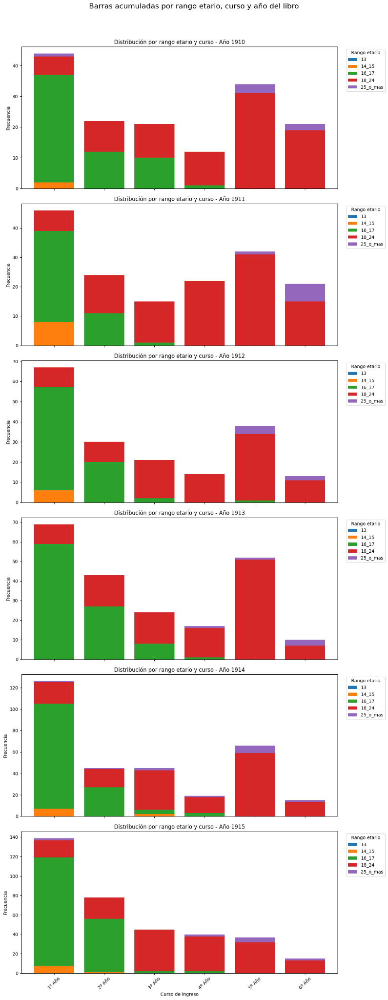
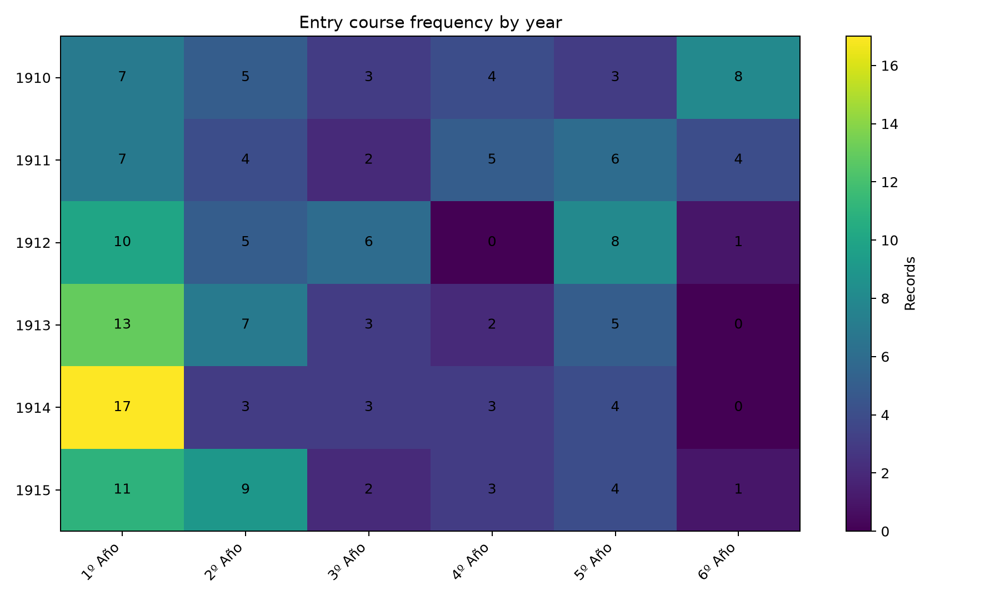

Nuevos años
Incorporación progresiva de otros tramos del Libro Registro de Matrícula.

Archivo escolar · Datos históricos · Memoria institucional
Escuela Normal Superior en Lenguas Vivas N.º 2 'Mariano Acosta'
Una plataforma de divulgación sobre archivo escolar, cultura material, matrícula histórica, visualización de datos y memoria institucional.
Proyecto
Este sitio presenta una experiencia de divulgación digital construida a partir de documentos históricos del Archivo Escolar de la ENS N.º 2 'Mariano Acosta'. A través de procesos de digitalización, transcripción, curaduría, análisis estadístico y visualización, el proyecto busca transformar fuentes escolares históricas en materiales accesibles para estudiantes, docentes, investigadores y la comunidad educativa.
La propuesta articula archivo escolar, memoria institucional, cultura material, datos históricos, análisis estadístico, visualización y divulgación pedagógica. Su propósito no es reemplazar el contacto con las fuentes, sino abrir nuevas formas de lectura pública sobre el patrimonio documental de la escuela.
Plataforma ampliable
El recorte 1910-1915 corresponde a la primera etapa de trabajo. La estructura de esta página fue pensada para ampliarse progresivamente con nuevos registros del archivo escolar, otras series documentales, comparaciones entre períodos, nuevas capas cartográficas y recursos pedagógicos para docentes y estudiantes.
Incorporación progresiva de otros tramos del Libro Registro de Matrícula.
Lectura de nuevas series documentales del Archivo Histórico Escolar.
Construcción de miradas entre períodos, cursos y variables históricas.
Desarrollo de nuevos gráficos estadísticos y narrativas visuales.
Ampliación de capas espaciales para explorar escuela, ciudad y movilidad.
Producción de recursos pedagógicos para trabajar con archivo y datos.
Corpus inicial
informe_PST_estadística.pdfEl documento trabajado fue originalmente una fuente administrativa, pero puede ser leído como una fuente histórica para estudiar composición de la matrícula, edades de ingreso, cursos, procedencia territorial y relación entre escuela y ciudad.
En esta primera etapa, el trabajo público se organiza como una lectura agregada del corpus, orientada a la divulgación institucional, la interpretación histórica y el uso pedagógico del archivo escolar.
Método
El dato histórico no aparece como información dada de antemano: se construye mediante operaciones de lectura, transcripción, revisión, normalización y curaduría. Por eso, esta página no presenta únicamente resultados técnicos, sino una forma de lectura histórica y pedagógica del archivo escolar.
Dimensiones de análisis
Permite estudiar la composición etaria de la matrícula y abrir preguntas sobre trayectorias escolares.
Permite organizar los registros como serie temporal y observar variaciones del volumen documental.
Permite analizar cómo se reparte la matrícula entre clasificaciones institucionales y años escolares.
Permite cruzar edades, cursos y años para pensar trayectorias homogéneas o heterogéneas.
Permite formular preguntas espaciales sin publicar direcciones individualizadas.
Permite leer la institución en relación con circulación urbana, distancia y centralidad territorial.
Permite convertir documentos escolares en materiales de enseñanza, indagación y debate.
Permite democratizar el acceso a fuentes documentales mediante relatos, gráficos y mapas públicos.
Lecturas visuales
Esta grilla incorpora imágenes agregadas y publicables cuando están disponibles. Donde todavía no se publica una visualización segura, se conserva un marcador sobrio para futuras etapas.

Permite observar si las edades de ingreso se concentran en ciertos valores o si existe dispersión etaria, abriendo preguntas sobre trayectorias escolares homogéneas o heterogéneas.

Permite comparar medianas, dispersión y valores extremos entre cohortes, mostrando continuidades y variaciones en la composición etaria de la matrícula.
Permite observar la evolución de la edad promedio por curso y año, y pensar la matrícula como una serie histórica, no como una fotografía aislada.

Permite cruzar edad, curso y año del libro, mostrando la relación entre clasificación institucional y trayectorias escolares.

Permite observar el volumen anual de registros incluidos en el Libro de Matrícula.

Permite analizar el peso relativo de cada curso dentro de la matrícula total de cada año.
Permite visualizar la distribución espacial de los domicilios estudiantiles y formular preguntas sobre el radio de captación de la escuela.

Permite identificar zonas de mayor concentración territorial y pensar la relación histórica entre escuela, ciudad y movilidad escolar.
Territorio
La georreferenciación de domicilios permite vincular el archivo escolar con la historia urbana. Los registros de matrícula no solo informan quiénes ingresaban a la institución, sino también desde qué zonas de la ciudad provenían, qué distancia recorrían y qué tipo de relación territorial establecía la escuela con su entorno.
La dimensión espacial se presenta aquí en escala agregada o cartográfica general. No se muestran domicilios exactos individualizados ni trayectorias personales.
Criterios éticos y patrimoniales
Esta página trabaja con datos agregados y visualizaciones generales. Su objetivo no es exponer trayectorias individuales, sino producir una lectura histórica, pedagógica y patrimonial de la matrícula escolar.
Esta primera publicación digital abre un recorrido posible: convertir el archivo escolar en un espacio de investigación, enseñanza y divulgación, capaz de crecer con nuevas fuentes, nuevas preguntas y nuevas formas de visualización.